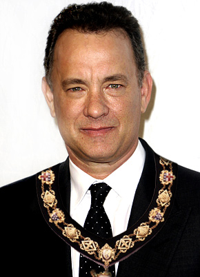

Uber Trippeldam
Trippeldam ist ein spaß und gemütliche stad zu laufen, zu bleiben oder ein Zeit zu kommen Winkeln. Es habt die Atmosphäre von ein Altmodisch Dorf aber es habt auch die Einflüsse van die moderne Zeit. Wir haben viel ess- und trink Gelegenheiten. Auch für die Kindern ist er genug zu tun sowie ein Spielplatz, Pool und ein Handwerkzentrum. Hier können sie Kerzen, Armbänder und noch viel mehr. Für der Väter ist er auch genug zu tun, weil die Frauen winkeln sind. So haben wir ein Mediamarkt mit dem neueste technische Gadgets. Auch hat Trippeldam ihren eigenen Fußball Club, FC Trippeldam. Näher der Fußball Felder haben wir ein große Sportcenter, wo Sie können Fitness, Boks und noch viel mehr. Auch habt Trippeldam ein wunderschönes Wald wo Sie können laufen oder wo Sie Fotos können machen. Mit dem Ferien ist er genug zu tun. So haben wir für Weinachten eine Eisbahn und ein große Tannenbaum.
Auch haben wir ein nette Bürgermeister, Dhr. Pols. Bürgermeister Pols ist inzwischen bereits 15 Jahre Bürgermeister von Trippeldam und bisher ist nichts zu klagen. Er hört genau naher die Bewohner und probiert ihre Meinung mit zu nehmen ihm die Entscheidungen dass gemacht worden. Mit wichtige Geschehen ist er auch bei.